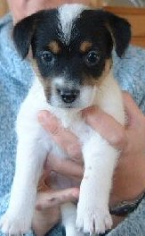
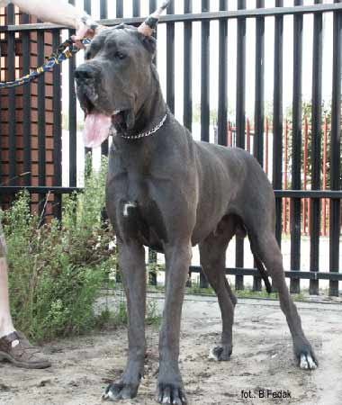

05.12.2002 - date of birth of WONDERFUL WHOOPIE Ons Eiland. Soon Vendetta and Whoopie will
be living at our place.
05.12.2002 - date of birth of WONDERFUL WHOOPIE Ons Eiland. Soon Vendetta and Whoopie will
be living at our place.
01.12.2002 - Poznañ - LEON gained title Junior Polish Winner' 2002, and finished Polish Junior Championship.

26.11.2002 - In Dutch kennel Ons Eiland puppies from the unique matting were born, both parents are from Australia. We are very happy that we can give one of them, VENDETTA LAIRDSLEY a new home.23.11.2002 - Europen Molossen Dog Show - our JAGA was best of all ! She won her class, became best female and later also best of breed and thus she finished Polish Championship. On the same show LEON was the best blue junior.
 20.08.2002 - We finally have our first BALAO litter - ten
wonderful blue puppies. The parents are: CH.PL. MESSALINA Medium
and J.PL.CH., Middle-East European Youth Winner'01 ULYSSES DAN FODIO Margarejro.
20.08.2002 - We finally have our first BALAO litter - ten
wonderful blue puppies. The parents are: CH.PL. MESSALINA Medium
and J.PL.CH., Middle-East European Youth Winner'01 ULYSSES DAN FODIO Margarejro.

From the last MESALKA's Medium litter, IZYDOR inhabits with us. His pet name is LEON.